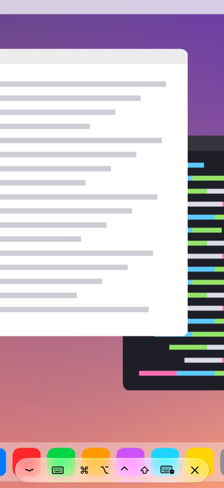

A remote desktop for iPad and iPhone, made for Macs. Nothing to install on the Mac, Tailscale built in, and a screen you simply touch.

Vantage talks to the Screen Sharing that's already built into macOS. Turn it on, sign in with your Mac account, and you're there.
Uses macOS Screen Sharing as it comes. No extra server, no account to create, nothing to set up on the Mac but a switch.
Reach your Macs from any network. Vantage runs its own Tailscale connection, so there's no separate VPN app.
Tap where you want to click, drag where you want to drag. Two fingers scroll and right-click; pinch to zoom.
⌘ ⌥ ⌃ ⇧ you can hold or lock, Escape, function keys and Mac shortcuts — tucked in the margin, never over your Dock.
Apple's own Screen Sharing codec, updates pushed by the Mac, and the pointer drawn right on your iPad.
Connects straight to your own Macs. Passwords stay in your device's keychain. No ads, no analytics, no tracking.
Macs on your network appear on their own. Each one shows where you left off and whether it's online.

On an M-series iPad, Vantage can ask your Mac for the same HEVC stream Apple's own High Performance mode uses — 60 frames a second, with the Mac's audio.

Sometimes you don't need to see the screen, just drive it. Remote connects to your Mac without streaming video, so it's quick to start and easy on battery and data.
A big trackpad with tap to click, two-finger scroll and right-click, a full Mac keyboard, and dictation for typing. For the Mac across the room on the TV.
Next and previous as big as your palm, start and end for Keynote, PowerPoint and Google Slides, a black screen, a timer, and a laser pointer you aim by tilting your phone.
An on-screen gamepad, or the Bluetooth controller you already own, with every button mapped to the keys your game wants.


On iPhone the desktop starts zoomed to a size you can read. On iPhone Duo, Laptop Mode turns the bottom half into a Mac keyboard and trackpad, with your Mac shaped to the screen above the hinge.



On your Mac: System Settings → General → Sharing → Screen Sharing.
It shows up under Nearby. Or tap + and enter its name or address.
Use your Mac username and password. For anywhere access, turn on Tailscale in Settings.
Vantage is in a small private beta on TestFlight. Want in? Send a note and you'll get an invite.
Requires iPadOS or iOS 18.1 or later and a Mac with Screen Sharing turned on. High Performance needs an M-series iPad and an Apple silicon Mac with macOS 14 or later.